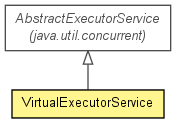

org.jboss.netty.util
Class VirtualExecutorService
java.lang.Object
 java.util.concurrent.AbstractExecutorService
org.jboss.netty.util.VirtualExecutorService
java.util.concurrent.AbstractExecutorService
org.jboss.netty.util.VirtualExecutorService
- All Implemented Interfaces:
- Executor, ExecutorService
public class VirtualExecutorService
- extends AbstractExecutorService

A delegating ExecutorService with its own termination management.
VirtualExecutorService is used when you want to inject an
ExecutorService but you do not want to allow the explicit termination
of threads on shutdown request. It is particularly useful when the
ExecutorService to inject is shared by different components and
the life cycle of the components depend on the termination of the injected
ExecutorService.
ExecutorService globalExecutor = ...;
ExecutorService virtualExecutor = new VirtualExecutorService(globalExecutor);
ChannelFactory factory =
new NioServerSocketChannelFactory(virtualExecutor, virtualExecutor);
...
// ChannelFactory.releaseExternalResources() shuts down the executor and
// interrupts the I/O threads to terminate all I/O tasks and to release all
// resources acquired by ChannelFactory.
factory.releaseExternalResources();
// Note that globalExecutor is not shut down because VirtualExecutorService
// implements its own termination management. All threads which were acquired
// by ChannelFactory via VirtualExecutorService are returned to the pool.
assert !globalExecutor.isShutdown();
The differences from an ordinary ExecutorService
A shutdown request (shutdown() or shutdownNow()) does not
shut down its parent Executor but simply sets its internal flag to
reject further execution request.
shutdownNow() interrupts only the thread which is executing the
task executed via VirtualExecutorService.
awaitTermination(long, TimeUnit) does not wait for real thread
termination but wait until VirtualExecutorService is shut down and
its active tasks are finished and the threads are returned to the parent
Executor.
- Version:
- $Rev: 2122 $, $Date: 2010-02-02 11:00:04 +0900 (Tue, 02 Feb 2010) $
- Author:
- The Netty Project, Trustin Lee
| Methods inherited from class java.lang.Object |
clone, equals, finalize, getClass, hashCode, notify, notifyAll, toString, wait, wait, wait |
VirtualExecutorService
public VirtualExecutorService(Executor parent)
- Creates a new instance with the specified parent
Executor.
isShutdown
public boolean isShutdown()
isTerminated
public boolean isTerminated()
shutdown
public void shutdown()
shutdownNow
public List<Runnable> shutdownNow()
awaitTermination
public boolean awaitTermination(long timeout,
TimeUnit unit)
throws InterruptedException
- Throws:
InterruptedException
execute
public void execute(Runnable command)
Copyright © 2008-2011 JBoss, a division of Red Hat, Inc.. All Rights Reserved.